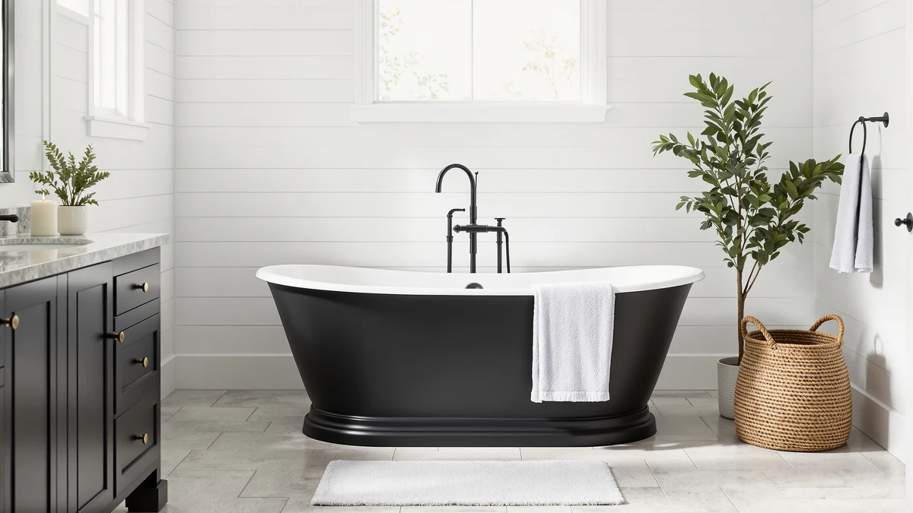

Best Freestanding Tub with Shower (2026)
Prices and picks verified as of August 2026. Independent, reader-supported reviews.


Quick Answer
The HLCZLUZ Portable Foldable Bathtub Freestanding is our pick for the best freestanding tub with shower setup, because it fits inside a shower stall you already have and costs a fraction of the floor-mount fillers below. If you want to keep an existing tub and add shower function to it, the Aolemi Floor Mount Bathtub Faucet is the cheapest fixture that does the job.
Our pick: HLCZLUZ Portable Foldable Bathtub Freestanding, $74.99 Check Price on Amazon
Bottom line: our top pick is the HLCZLUZ Portable Foldable Bathtub at $74.99. The best budget option is the Delta Faucet Trinsic Floor Mount Tub Filler - Freestanding at $1.
Things to Know Before You Buy
- A floor-mount filler is the most common route to shower function. The two Delta Trinsic fillers, the ARCORA brushed gold faucet, the Aolemi filler, and the Wowkk waterfall filler all mount to the floor beside a freestanding tub instead of the tub deck itself.
- A portable tub can skip fixtures altogether. The HLCZLUZ folding model sets up inside a shower stall you already own, so you get a freestanding tub with shower access without buying or installing a separate faucet.
- The two Delta Trinsic listings are priced $155 apart. Neither listing specifies what separates the $1,825.00 version from the $1,670.00 version, so check product photos for finish differences before you order.
- Waterfall spouts fill faster but need more clearance. The Wowkk filler's wide spout fills a deep tub quicker than the narrower fillers here, though owners report it can splash in a tight bathroom.
- Fixture price and tub price are separate line items. The EliteEdge 59 inch acrylic tub costs $710.17 on its own, so budget for a filler on top of that if you are building a full setup from scratch.
The best freestanding tub with shower setup almost always comes down to the fixture, not the tub. A freestanding tub has no built-in shower enclosure, so the fixture bolted to the floor beside it, or a compact tub that fits inside a stall you already have, is what decides whether you get a shower option at all. We compared seven products that solve that problem in different ways, from a $74.99 folding tub to two premium Delta Trinsic floor-mount fillers priced above $1,600.
We built this guide by comparing manufacturer specs, current Amazon pricing, and patterns across verified owner reviews for portable tubs, floor-mount fillers, and one acrylic soaking tub. We did not rank generic bathtub listings, and where a listing leaves out a spec like material or exact dimensions, we say so instead of guessing.
For most people who want a freestanding tub with shower access without a plumbing project, the HLCZLUZ Portable Foldable Bathtub Freestanding is the pick that gets you there fastest. If you already have a tub and need only the fixture, the Aolemi Floor Mount Bathtub Faucet covers the basics at the lowest price in this guide.
Why You Should Trust Us
Ilane Tall covers bathroom fixtures for this site, and this guide follows the same research process used across our freestanding tub comparisons. We do not run a physical testing lab and do not claim to have installed each of these products ourselves. Instead, we compare manufacturer specs, current Amazon pricing, and patterns across verified owner reviews, then flag anything a listing does not disclose, which matters most when you are shopping for a freestanding tub with shower fixtures that vary this much in price.
Our methodology page covers how we vet products before they make a list like this one.
How We Picked
We pulled every freestanding tub, floor-mount faucet, and tub filler in our product database tagged for bath-and-shower use, then narrowed the list to seven picks that cover a range of budgets and bathroom layouts. A product only makes this best freestanding tub with shower list if it has a published price, a real product image, and enough owner feedback on Amazon to judge fit and durability.
We also cross-checked sizing against our freestanding bathtub buying guide so the dimensions here match what fits a standard US bathroom.
How We Compared
For the tub, we compared listed dimensions and price per inch of soaking length against the other acrylic tubs in our database. For the six fixtures, because a freestanding tub with shower setup depends more on the fixture than the tub itself, we looked at mount type, listed price, and finish, since floor-mount fillers are what actually add shower capability to a standalone tub.
We read through verified Amazon reviews for recurring complaints, like water spotting on gold finishes or splashing from wider spouts, and weighed those against price. See our freestanding tub faucets guide for a closer look at rough-in specs if you are fitting a filler to existing plumbing.
Our Picks

HLCZLUZ Portable Foldable Bathtub Freestanding
What we like
- Folds flat for storage between uses
- Sets up inside a standard shower stall, so it works with plumbing you already have
- At $74.99, it costs a fraction of any fixture in this guide
Flaws but not dealbreakers
- At 59 by 21.6 by 19.6 inches, it is snug for taller adults
- The listing does not specify a material, so check the product photos if you have a preference
| Material | — |
| Size | 59"L x 21.6"W x 19.6"H |
The HLCZLUZ Portable Foldable Bathtub Freestanding is the easiest way to get a freestanding tub with shower access without moving a single pipe. It sets up inside your existing shower stall, so you get a soaking tub during the day and a normal shower the rest of the time, in the same footprint. At 59 inches long, 21.6 inches wide, and 19.6 inches tall, it fits a single adult rather than a full stretch-out soak, and folding it flat afterward keeps it from taking over a small bathroom.
Buyers who choose a portable tub like this one are usually working around a rental lease or a bathroom too small for a built-in soaker, and reviewers describe setup taking only a few minutes. The trade-off for that flexibility is a narrower tub than the acrylic model further down this guide, so taller adults may find their knees sit higher than they would like. At $74.99, it costs less than half of even the cheapest floor-mount filler here, which makes it a low-risk way to test whether a freestanding tub with shower routine fits your life before committing to a bigger renovation.

Delta Faucet Trinsic Floor Mount
What we like
- Delta is a recognized name in bathroom fixtures, which matters for resale and warranty support
- Floor-mount design keeps the tub deck clear of hardware
- Trinsic is a long-running collection, so matching finishes elsewhere in the bathroom is straightforward
Flaws but not dealbreakers
- At $1,825.00, it is the single most expensive product in this guide
- The listing does not spell out which parts ship in the box, so confirm what is included before you order
| Material | — |
| Size | 6.75 x 16.75 x 46.50 inches |
This Delta Faucet Trinsic Floor Mount is the priciest item in this guide by a wide margin, and it is aimed at a different buyer than the HLCZLUZ or Aolemi picks above. At $1,825.00, it is a fixture for someone finishing a primary bathroom remodel who wants a recognized brand name attached to the plumbing, not only a functional part. The listed dimensions, 6.75 by 16.75 by 46.50 inches, describe the packaged unit rather than the finished installation height, so confirm rough-in clearance with the product page before you buy.
Delta backs the Trinsic line with widely available parts and finish options, which is worth something if a fixture ever needs a replacement handle or cartridge years down the line. That said, the price gap between this and the Aolemi filler earlier in this guide is over $1,700 for two products that ultimately do the same job: filling a freestanding tub. Unless brand recognition and finish-matching across your bathroom hardware are priorities, a budget floor-mount filler gets you the same shower-adjacent function for a fraction of the cost.

Freestanding Bathtub Faucet Brushed Gold
What we like
- Brushed gold finish matches modern gold fixtures and hardware
- Floor-mount design keeps the tub deck clear
- Priced well under the Delta Trinsic fillers in this guide
Flaws but not dealbreakers
- At $189.99, it costs more than the Aolemi filler below for a finish upgrade
- Reviewers note that gold finishes in general show water spots faster than chrome or nickel
| Material | — |
| Size | — |
The ARCORA Freestanding Bathtub Faucet Brushed Gold sits between the budget Aolemi filler and the premium Delta Trinsic fillers on this list, both in price and in positioning. The brushed gold finish is the main draw, and it reads as an intentional design choice once the rest of your bathroom hardware is coordinated to match. Because it mounts to the floor next to the tub rather than the tub deck, it also keeps the rim of the tub clear for towels or a bath tray.
At $189.99, ARCORA prices this well above the Aolemi filler but under a third of what either Delta Trinsic listing costs, which makes it the middle option for anyone who wants a finish upgrade without a name-brand price tag. Owners report the finish holding up to daily use, though as with most gold-toned fixtures, a quick wipe-down after each use keeps water spots from building up around the base.

Aolemi Floor Mount Bathtub Faucet
What we like
- The cheapest floor-mount faucet in this guide, at $119.99
- Floor-mount installation matches the same basic footprint as the pricier options
- Straightforward design that pairs with most tub styles
Flaws but not dealbreakers
- Fewer finish options than the brushed gold ARCORA model above
- The listing does not detail included accessories, so confirm what ships in the box before ordering
| Material | — |
| Size | — |
The Aolemi Floor Mount Bathtub Faucet covers the same basic job as the fixtures above and below it on this list, at the lowest price of any of them. It installs the same way, mounted to the floor next to the tub rather than into the tub deck, so the plumbing requirements are similar even though the price and finish are not. For a bathroom where the fixture is a functional part rather than a design centerpiece, that is a reasonable trade.
According to verified Amazon reviews, buyers who choose a filler in this price range are typically prioritizing function over finish, and the Aolemi delivers the basics: a floor-mount design that fills a tub without a long wait or a premium price. If a coordinated finish across your bathroom hardware matters more than saving over $70, the ARCORA brushed gold faucet above is the better match. At $119.99, this is the pick for a straightforward freestanding tub with shower setup on a tighter budget.

Delta Faucet Trinsic Floor Mount
What we like
- Same Trinsic collection and brand backing as the pricier listing above, for $155 less
- Floor-mount design keeps the tub deck clear
- Delta parts and finishes are widely available for future repairs
Flaws but not dealbreakers
- Neither Delta listing states what distinguishes this one from the other, so compare photos before ordering
- Still costs well over ten times the Aolemi budget filler
| Material | — |
| Size | — |
This second Delta Faucet Trinsic Floor Mount listing sits $155 below the other Trinsic fixture in this guide, at $1,670.00 against $1,825.00. Both share the Trinsic name and the floor-mount format, and since neither product page spells out a finish or feature difference, the gap likely comes down to trim tier or a bundled part rather than a functional upgrade.
If brand recognition is the deciding factor for your freestanding tub with shower project and the exact finish is flexible, this is the lower-cost way into the same Delta Trinsic collection. Buyers who care about a specific finish match should check the listing photos on both Trinsic options directly, since a $155 difference is easy to justify for the right finish and hard to justify for none at all.

Wowkk Waterfall Tub Filler Freestanding
What we like
- Waterfall-style spout fills a deep tub faster than a standard spout
- Freestanding floor-mount design works with any tub in this guide
- The wide, flat spout doubles as a visual focal point in an open bathroom layout
Flaws but not dealbreakers
- At $329.99, it costs more than the ARCORA or Aolemi fillers above
- A wider water flow can splash more than a narrow spout in a tight bathroom
| Material | — |
| Size | — |
The Wowkk Waterfall Tub Filler Freestanding trades a standard spout for a wide, flat waterfall-style opening, which fills a deep soaking tub noticeably faster than the narrower fillers earlier in this guide. That matters most if you pair it with the 59 inch acrylic tub below, since a deep tub takes longer to fill with a standard spout than most people want to wait.
The trade-off for that faster fill and the more dramatic look is price. At $329.99, it costs nearly three times what the Aolemi filler runs, and it earns that premium mainly if you are pairing it with a larger or deeper tub rather than a compact model like the HLCZLUZ. Owners report that the wider water flow can splash more in a smaller bathroom, so measure your clearance around the tub before choosing a waterfall filler over a standard one.

Freestanding Bathtub 59 inch Acrylic
What we like
- Acrylic construction is lighter than cast iron and easier to move into place
- At 59 inches, it fits bathrooms that cannot accommodate a longer tub
- Freestanding design pairs with any of the floor-mount fillers in this guide
Flaws but not dealbreakers
- At $710.17, it costs more than any single fixture in this guide except the two Delta Trinsic fillers
- The listing does not specify wall thickness, so ask the seller if heat retention over a long soak is a concern
| Material | — |
| Size | 59 Inch |
The EliteEdge Freestanding Bathtub 59 inch Acrylic is where this guide shifts from fixtures to the tub itself. At 59 inches, it is a compact footprint for a freestanding soaking tub, sized for bathrooms that cannot fit a larger tub without crowding the room. Acrylic is lighter than cast iron, so getting it into place, or repositioning it later, is less of a two-person job.
Pair it with a floor-mount filler like the Aolemi or ARCORA above, and you have a complete freestanding tub with shower setup: a full-size soaking tub plus a fixture at a price you control. At $710.17, it costs more than any fixture here besides the two Delta Trinsic fillers, so budget for the tub and the fixture as separate purchases rather than assuming one price covers both. Owners note the acrylic surface stays warmer to the touch than steel alternatives, which matters if you plan to soak for more than a few minutes.
Quick Comparison
Here is how the seven products in this best freestanding tub with shower guide stack up on price and fit.
| Product | Material | Price | Rating | Best for | Get it |
|---|---|---|---|---|---|
| HLCZLUZ Portable Foldable Bathtub Freestanding | — | $74.99 | 4 | Renters and small bathrooms | View on Amazon → |
| Delta Faucet Trinsic Floor Mount | — | $1,825.00 | 4 | Premium name-brand upgrade | View on Amazon → |
| Freestanding Bathtub Faucet Brushed Gold | — | $189.99 | 4 | Matching gold hardware | View on Amazon → |
| Aolemi Floor Mount Bathtub Faucet | — | $119.99 | 4 | Budget floor-mount filler | View on Amazon → |
| Delta Faucet Trinsic Floor Mount | — | $1,670.00 | 4 | Delta name at a lower price | View on Amazon → |
| Wowkk Waterfall Tub Filler Freestanding | — | $329.99 | 4 | Fast fills, bold spout | View on Amazon → |
| Freestanding Bathtub 59 inch Acrylic | — | $710.17 | 4 | Small bathrooms, full tub | View on Amazon → |
What counts as a freestanding tub with shower?
A freestanding tub with shower setup pairs a standalone soaking tub with a fixture that adds shower function, since freestanding tubs do not come with a built-in shower enclosure.
Why are there two Delta Trinsic floor-mount fillers on this list?
The two Delta Faucet Trinsic Floor Mount listings in this guide are priced $155 apart, at $1,825.00 and $1,670.00, which points to a difference in finish or trim tier rather than a difference in function.
The Competition
Before narrowing this list to seven picks, we looked at built-in shower-tub combo units, the molded fiberglass inserts common in new construction. We left those out because they are not freestanding, and swapping one in means tearing out a wall, a different project than what most people searching for the best freestanding tub with shower are planning. We also passed on drop-in acrylic tubs that require a custom deck or platform, since those need carpentry that a floor-mount filler and a standalone tub do not. Wall-mount tub fillers came up too, but they require a finished wall behind the tub with the right plumbing already in place, which rules them out for the same reason a shower-tub combo does: it is a different renovation than swapping in a freestanding tub and a floor-mount fixture.
For most people, the HLCZLUZ Portable Foldable Bathtub Freestanding is still the best freestanding tub with shower pick in this guide, and the fixtures and tub above cover the upgrades if you have more budget or an existing tub you want to keep.
Frequently Asked Questions
What counts as a freestanding tub with shower?
A freestanding tub with shower setup pairs a standalone soaking tub with a fixture that adds shower function, since freestanding tubs do not come with a built-in shower enclosure. That fixture is usually a floor-mount tub filler, like the Delta Trinsic, ARCORA, Aolemi, or Wowkk models in this guide, or you can skip the fixture entirely with a compact tub such as the HLCZLUZ that sets up inside an existing shower stall.
Why are there two Delta Trinsic floor-mount fillers on this list?
The two Delta Faucet Trinsic Floor Mount listings in this guide are priced $155 apart, at $1,825.00 and $1,670.00, which points to a difference in finish or trim tier rather than a difference in function. Neither listing spells out exactly what separates them, so compare the product photos on each page before you order if a specific finish matters to you.
How much does it cost to add a shower to a freestanding tub?
In this guide, adding shower function to a freestanding tub ranges from $119.99 for the Aolemi floor-mount filler to $1,825.00 for the pricier Delta Trinsic model, with the ARCORA brushed gold faucet and Wowkk waterfall filler landing between those two extremes. If you would rather skip a fixture purchase altogether, the $74.99 HLCZLUZ portable tub gets you a freestanding soak inside a shower stall you already have.
Related Guides
More on choosing fixtures and tubs for a freestanding tub with shower project: